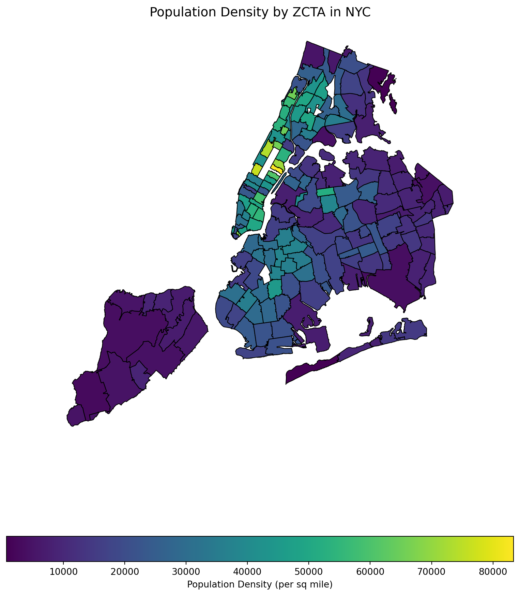
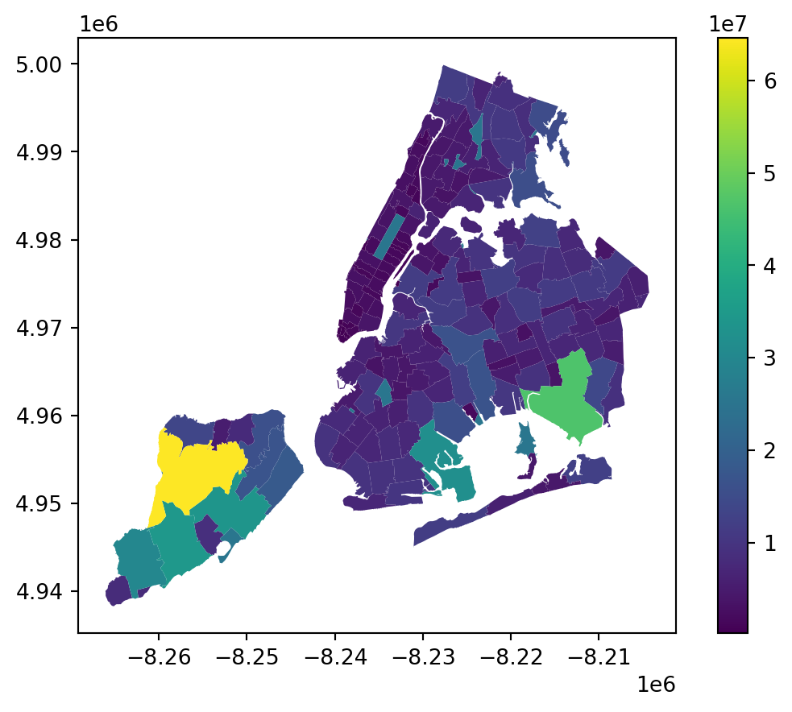
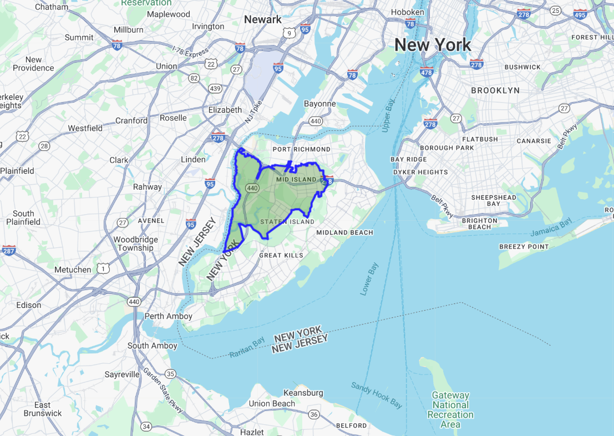
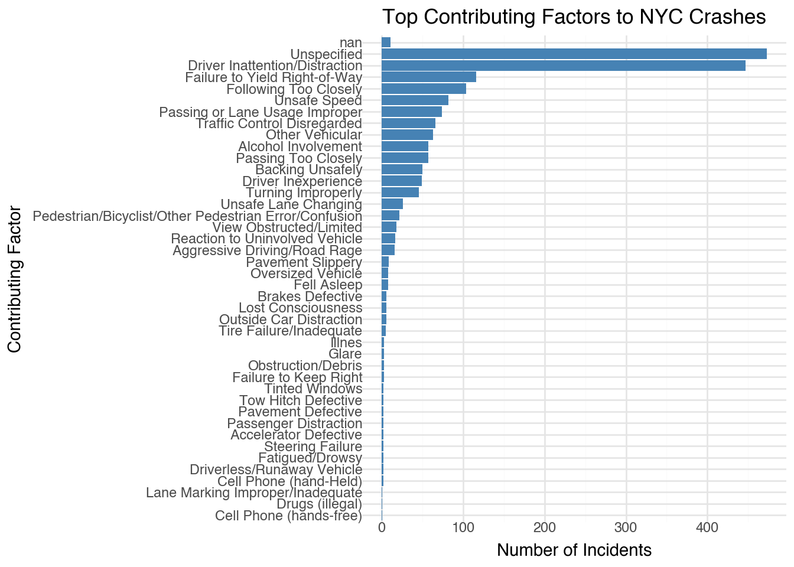

import pandas as pd5 Data Manipulation
5.1 Introduction
Data manipulation is crucial for transforming raw data into a more analyzable format, essential for uncovering patterns and ensuring accurate analysis. This chapter introduces the core techniques for data manipulation in Python, utilizing the Pandas library, a cornerstone for data handling within Python’s data science toolkit.
Python’s ecosystem is rich with libraries that facilitate not just data manipulation but comprehensive data analysis. Pandas, in particular, provides extensive functionality for data manipulation tasks including reading, cleaning, transforming, and summarizing data. Using real-world datasets, we will explore how to leverage Python for practical data manipulation tasks.
By the end of this chapter, you will learn to:
- Import/export data from/to diverse sources.
- Clean and preprocess data efficiently.
- Transform and aggregate data to derive insights.
- Merge and concatenate datasets from various origins.
- Analyze real-world datasets using these techniques.
5.2 Data Manipulation with Pandas
This section is prepared by Lang Lang. I am a senior student double majoring in
data science and economics in University of Connecticut.
5.2.1 Introduction
In this section, I will introduce about data manipulation using Pandas,
which is a powerful Python library for working with data. I’ll walk through
some basic operations like filtering, merging, and summarizing data using a real
data set of NYC motor vehicle collisions.
Pandas is a powerful Python library for data manipulation and analysis. It
provides two key data structures:
- Series: A one-dimensional labeled array.
- Data Frame: A two-dimensional labeled table with rows and columns.
5.2.1.1 Why Use Pandas?
- Efficiently handles large data sets.
- Provides flexible data manipulation functions.
- Works well with NumPy and visualization libraries like Matplotlib.
5.2.2 Loading Data
5.2.2.1 Reading NYC Crash Data
We’ll work with the NYC Motor Vehicle Collisions data set in the class notes
repository.
- Using the following code to import the Pandas library in Python
- Using the following code to load the data set
df = pd.read_csv("data/nyccrashes_2024w0630_by20250212.csv")5.2.2.2 Renaming The Columns
Using the following codes to rename the columns.
df.columns = [col.strip().lower().replace(" ", "_") for col in df.columns]
df.columnsIndex(['crash_date', 'crash_time', 'borough', 'zip_code', 'latitude',
'longitude', 'location', 'on_street_name', 'cross_street_name',
'off_street_name', 'number_of_persons_injured',
'number_of_persons_killed', 'number_of_pedestrians_injured',
'number_of_pedestrians_killed', 'number_of_cyclist_injured',
'number_of_cyclist_killed', 'number_of_motorist_injured',
'number_of_motorist_killed', 'contributing_factor_vehicle_1',
'contributing_factor_vehicle_2', 'contributing_factor_vehicle_3',
'contributing_factor_vehicle_4', 'contributing_factor_vehicle_5',
'collision_id', 'vehicle_type_code_1', 'vehicle_type_code_2',
'vehicle_type_code_3', 'vehicle_type_code_4', 'vehicle_type_code_5'],
dtype='object')5.2.2.3 Viewing the First Few Rows
The head function in Pandas is used to display the first few rows of a DataFrame.
df.head() # Default value of n is 5| crash_date | crash_time | borough | zip_code | latitude | longitude | location | on_street_name | cross_street_name | off_street_name | ... | contributing_factor_vehicle_2 | contributing_factor_vehicle_3 | contributing_factor_vehicle_4 | contributing_factor_vehicle_5 | collision_id | vehicle_type_code_1 | vehicle_type_code_2 | vehicle_type_code_3 | vehicle_type_code_4 | vehicle_type_code_5 | |
|---|---|---|---|---|---|---|---|---|---|---|---|---|---|---|---|---|---|---|---|---|---|
| 0 | 06/30/2024 | 23:17 | BRONX | 10460.0 | 40.838844 | -73.87817 | (40.838844, -73.87817) | EAST 177 STREET | DEVOE AVENUE | NaN | ... | Unspecified | NaN | NaN | NaN | 4737486 | Sedan | Pick-up Truck | NaN | NaN | NaN |
| 1 | 06/30/2024 | 8:30 | BRONX | 10468.0 | 40.862732 | -73.90333 | (40.862732, -73.90333) | WEST FORDHAM ROAD | GRAND AVENUE | NaN | ... | Unspecified | NaN | NaN | NaN | 4737502 | Sedan | NaN | NaN | NaN | NaN |
| 2 | 06/30/2024 | 20:47 | NaN | NaN | 40.763630 | -73.95330 | (40.76363, -73.9533) | FDR DRIVE | NaN | NaN | ... | NaN | NaN | NaN | NaN | 4737510 | Sedan | NaN | NaN | NaN | NaN |
| 3 | 06/30/2024 | 13:10 | BROOKLYN | 11234.0 | 40.617030 | -73.91989 | (40.61703, -73.91989) | EAST 57 STREET | AVENUE O | NaN | ... | Driver Inattention/Distraction | NaN | NaN | NaN | 4737499 | Sedan | Sedan | NaN | NaN | NaN |
| 4 | 06/30/2024 | 16:42 | NaN | NaN | NaN | NaN | NaN | 33 STREET | ASTORIA BOULEVARD | NaN | ... | Unspecified | NaN | NaN | NaN | 4736925 | Sedan | Station Wagon/Sport Utility Vehicle | NaN | NaN | NaN |
5 rows × 29 columns
5.2.2.4 Checking Dataset Structure
The info function in Pandas provides a summary of a DataFrame, including:
- Number of rows and columns
- Column names and data types
- Number of non-null values per column
- Memory usage
df.info()<class 'pandas.core.frame.DataFrame'>
RangeIndex: 1876 entries, 0 to 1875
Data columns (total 29 columns):
# Column Non-Null Count Dtype
--- ------ -------------- -----
0 crash_date 1876 non-null object
1 crash_time 1876 non-null object
2 borough 1334 non-null object
3 zip_code 1334 non-null float64
4 latitude 1745 non-null float64
5 longitude 1745 non-null float64
6 location 1745 non-null object
7 on_street_name 1330 non-null object
8 cross_street_name 944 non-null object
9 off_street_name 546 non-null object
10 number_of_persons_injured 1876 non-null int64
11 number_of_persons_killed 1876 non-null int64
12 number_of_pedestrians_injured 1876 non-null int64
13 number_of_pedestrians_killed 1876 non-null int64
14 number_of_cyclist_injured 1876 non-null int64
15 number_of_cyclist_killed 1876 non-null int64
16 number_of_motorist_injured 1876 non-null int64
17 number_of_motorist_killed 1876 non-null int64
18 contributing_factor_vehicle_1 1865 non-null object
19 contributing_factor_vehicle_2 1426 non-null object
20 contributing_factor_vehicle_3 174 non-null object
21 contributing_factor_vehicle_4 52 non-null object
22 contributing_factor_vehicle_5 14 non-null object
23 collision_id 1876 non-null int64
24 vehicle_type_code_1 1843 non-null object
25 vehicle_type_code_2 1231 non-null object
26 vehicle_type_code_3 162 non-null object
27 vehicle_type_code_4 48 non-null object
28 vehicle_type_code_5 14 non-null object
dtypes: float64(3), int64(9), object(17)
memory usage: 425.2+ KBThis tells us:
The dataset has 1876 rows and 29 columns.
Data types include float64(3), int64(9), object(17).
There are no missing values in any column.
The dataset consumes 425.2+ KB of memory.
5.2.2.5 Descriptive Statistics
The discribe function provides summary statistics for numerical columns in a
Pandas DataFrame.
df.describe()| zip_code | latitude | longitude | number_of_persons_injured | number_of_persons_killed | number_of_pedestrians_injured | number_of_pedestrians_killed | number_of_cyclist_injured | number_of_cyclist_killed | number_of_motorist_injured | number_of_motorist_killed | collision_id | |
|---|---|---|---|---|---|---|---|---|---|---|---|---|
| count | 1334.000000 | 1745.000000 | 1745.000000 | 1876.000000 | 1876.000000 | 1876.000000 | 1876.000000 | 1876.000000 | 1876.0 | 1876.000000 | 1876.000000 | 1.876000e+03 |
| mean | 10902.185157 | 40.649264 | -73.792754 | 0.616738 | 0.004264 | 0.093284 | 0.002665 | 0.065032 | 0.0 | 0.432836 | 0.001599 | 4.738602e+06 |
| std | 526.984169 | 1.689337 | 3.064378 | 0.915477 | 0.103191 | 0.338369 | 0.095182 | 0.246648 | 0.0 | 0.891003 | 0.039968 | 1.772834e+03 |
| min | 10001.000000 | 0.000000 | -74.237366 | 0.000000 | 0.000000 | 0.000000 | 0.000000 | 0.000000 | 0.0 | 0.000000 | 0.000000 | 4.736561e+06 |
| 25% | 10457.000000 | 40.661804 | -73.968540 | 0.000000 | 0.000000 | 0.000000 | 0.000000 | 0.000000 | 0.0 | 0.000000 | 0.000000 | 4.737667e+06 |
| 50% | 11208.500000 | 40.712696 | -73.922960 | 0.000000 | 0.000000 | 0.000000 | 0.000000 | 0.000000 | 0.0 | 0.000000 | 0.000000 | 4.738258e+06 |
| 75% | 11239.000000 | 40.767690 | -73.869180 | 1.000000 | 0.000000 | 0.000000 | 0.000000 | 0.000000 | 0.0 | 1.000000 | 0.000000 | 4.738886e+06 |
| max | 11694.000000 | 40.907246 | 0.000000 | 11.000000 | 4.000000 | 7.000000 | 4.000000 | 1.000000 | 0.0 | 11.000000 | 1.000000 | 4.765601e+06 |
This provides insights such as:
Total count of entries
Mean, min, and max values
Standard deviation
5.2.3 Selecting and Filtering Data
5.2.3.1 Selecting Specific Columns
Sometimes, we only need certain columns.
In this case, you can use select function.
df_selected = df[['crash_date', 'crash_time', 'borough',
'number_of_persons_injured']]
df_selected.head() | crash_date | crash_time | borough | number_of_persons_injured | |
|---|---|---|---|---|
| 0 | 06/30/2024 | 23:17 | BRONX | 0 |
| 1 | 06/30/2024 | 8:30 | BRONX | 0 |
| 2 | 06/30/2024 | 20:47 | NaN | 0 |
| 3 | 06/30/2024 | 13:10 | BROOKLYN | 1 |
| 4 | 06/30/2024 | 16:42 | NaN | 1 |
5.2.3.2 Filtering Data
when you would like to filter certain specific data (e.g., Crashes in 2024-06-30),
you can using the following data to define:
# Convert crash date to datetime format
df['crash_date'] = pd.to_datetime(df['crash_date'])
june30_df = df[df['crash_date'] == '2024-06-30']
june30_df.head()| crash_date | crash_time | borough | zip_code | latitude | longitude | location | on_street_name | cross_street_name | off_street_name | ... | contributing_factor_vehicle_2 | contributing_factor_vehicle_3 | contributing_factor_vehicle_4 | contributing_factor_vehicle_5 | collision_id | vehicle_type_code_1 | vehicle_type_code_2 | vehicle_type_code_3 | vehicle_type_code_4 | vehicle_type_code_5 | |
|---|---|---|---|---|---|---|---|---|---|---|---|---|---|---|---|---|---|---|---|---|---|
| 0 | 2024-06-30 | 23:17 | BRONX | 10460.0 | 40.838844 | -73.87817 | (40.838844, -73.87817) | EAST 177 STREET | DEVOE AVENUE | NaN | ... | Unspecified | NaN | NaN | NaN | 4737486 | Sedan | Pick-up Truck | NaN | NaN | NaN |
| 1 | 2024-06-30 | 8:30 | BRONX | 10468.0 | 40.862732 | -73.90333 | (40.862732, -73.90333) | WEST FORDHAM ROAD | GRAND AVENUE | NaN | ... | Unspecified | NaN | NaN | NaN | 4737502 | Sedan | NaN | NaN | NaN | NaN |
| 2 | 2024-06-30 | 20:47 | NaN | NaN | 40.763630 | -73.95330 | (40.76363, -73.9533) | FDR DRIVE | NaN | NaN | ... | NaN | NaN | NaN | NaN | 4737510 | Sedan | NaN | NaN | NaN | NaN |
| 3 | 2024-06-30 | 13:10 | BROOKLYN | 11234.0 | 40.617030 | -73.91989 | (40.61703, -73.91989) | EAST 57 STREET | AVENUE O | NaN | ... | Driver Inattention/Distraction | NaN | NaN | NaN | 4737499 | Sedan | Sedan | NaN | NaN | NaN |
| 4 | 2024-06-30 | 16:42 | NaN | NaN | NaN | NaN | NaN | 33 STREET | ASTORIA BOULEVARD | NaN | ... | Unspecified | NaN | NaN | NaN | 4736925 | Sedan | Station Wagon/Sport Utility Vehicle | NaN | NaN | NaN |
5 rows × 29 columns
5.2.3.3 Filter A DataFrame
The query function in Pandas is used to filter a DataFrame using a more
readable, SQL-like syntax. For example, now I would like to find the crashes with
the number of persons injured more than 2. We can using the following code:
df_filtered = df.query("`number_of_persons_injured` > 2")
df_filtered.head()| crash_date | crash_time | borough | zip_code | latitude | longitude | location | on_street_name | cross_street_name | off_street_name | ... | contributing_factor_vehicle_2 | contributing_factor_vehicle_3 | contributing_factor_vehicle_4 | contributing_factor_vehicle_5 | collision_id | vehicle_type_code_1 | vehicle_type_code_2 | vehicle_type_code_3 | vehicle_type_code_4 | vehicle_type_code_5 | |
|---|---|---|---|---|---|---|---|---|---|---|---|---|---|---|---|---|---|---|---|---|---|
| 20 | 2024-06-30 | 13:05 | NaN | NaN | 40.797447 | -73.946710 | (40.797447, -73.94671) | MADISON AVENUE | NaN | NaN | ... | Unspecified | NaN | NaN | NaN | 4736750 | Sedan | Station Wagon/Sport Utility Vehicle | NaN | NaN | NaN |
| 33 | 2024-06-30 | 15:30 | BROOKLYN | 11229.0 | 40.610653 | -73.953550 | (40.610653, -73.95355) | KINGS HIGHWAY | OCEAN AVENUE | NaN | ... | NaN | NaN | NaN | NaN | 4737460 | Sedan | NaN | NaN | NaN | NaN |
| 35 | 2024-06-30 | 16:28 | STATEN ISLAND | 10304.0 | 40.589180 | -74.098946 | (40.58918, -74.098946) | JEFFERSON STREET | LIBERTY AVENUE | NaN | ... | Unspecified | NaN | NaN | NaN | 4736985 | Sedan | Sedan | NaN | NaN | NaN |
| 37 | 2024-06-30 | 20:29 | MANHATTAN | 10027.0 | 40.807667 | -73.949290 | (40.807667, -73.94929) | 7 AVENUE | WEST 123 STREET | NaN | ... | Unspecified | NaN | NaN | NaN | 4737257 | Station Wagon/Sport Utility Vehicle | Sedan | NaN | NaN | NaN |
| 45 | 2024-06-30 | 19:56 | BROOKLYN | 11237.0 | 40.709003 | -73.922340 | (40.709003, -73.92234) | SCOTT AVENUE | FLUSHING AVENUE | NaN | ... | Unspecified | Unspecified | NaN | NaN | 4736995 | Sedan | Station Wagon/Sport Utility Vehicle | Moped | NaN | NaN |
5 rows × 29 columns
5.2.4 Merging DataFrames
In Pandas, the merge function is used to combine multiple DataFrames based
on a common column.
This is useful when working with multiple datasets that need to be joined for
analysis.
5.2.4.1 Example: Merging Crash Data with Total Injuries per Borough
Suppose we have a dataset containing crash details, and we want to analyze how
the total number of injuries in each borough relates to individual crashes.
We can achieve this by aggregating the total injuries per borough and merging it
with the crash dataset.
The following code:
Aggregates the total injuries per borough using
.groupby().Selects relevant columns from the main dataset (
collision_id,borough,
number_of_persons_injured).Merges the aggregated injury data with the crash dataset using merge function on
theboroughcolumn.
# Aggregate total injuries per borough
df_borough_info = df.groupby(
'borough', as_index=False
)['number_of_persons_injured'].sum()
df_borough_info.rename(
columns={'number_of_persons_injured': 'total_injuries'},
inplace=True)
# Select relevant columns from the main dataset
df_crashes = df[['collision_id', 'borough', 'number_of_persons_injured']]
# Merge crash data with total injuries per borough
df_merged = pd.merge(df_crashes, df_borough_info, on='borough', how='left')
# Display first few rows of the merged dataset
df_merged.head()| collision_id | borough | number_of_persons_injured | total_injuries | |
|---|---|---|---|---|
| 0 | 4737486 | BRONX | 0 | 126.0 |
| 1 | 4737502 | BRONX | 0 | 126.0 |
| 2 | 4737510 | NaN | 0 | NaN |
| 3 | 4737499 | BROOKLYN | 1 | 295.0 |
| 4 | 4736925 | NaN | 1 | NaN |
The merged dataset now includes:
- collision_id: Unique identifier for each crash.
- borough: The borough where the crash occurred.
- number_of_persons_injured: Number of injuries in a specific crash.
- total_injuries: The total number of injuries reported in that borough.
This merged dataset allows us to compare individual crash injuries with the
overall injury trend in each borough, helping in further data analysis and
visualization.
5.2.5 Data Visualization
Visualizing data is crucial to understanding patterns and relationships within
the dataset. In this section, we will create one-variable tables (frequency
table), two-variable tables (contingency table).
5.2.5.1 One-Variable Table
A one-variable table (also called a frequency table) shows the distribution of
values for a single categorical variable.
For example, we can count the number of crashes per borough:
borough_counts = df['borough'].value_counts()
borough_countsborough
BROOKLYN 462
QUEENS 381
MANHATTAN 228
BRONX 213
STATEN ISLAND 50
Name: count, dtype: int64This table displays the number of accidents recorded in each borough of NYC. It
helps identify which borough has the highest accident frequency.
5.2.5.2 Two-Variable Table
A two-variable table (also called a contingency table) shows the relationship
between two categorical variables.
For example, we can analyze the number of crashes per borough per day:
# make pivot table
borough_day_table = df.pivot_table(
index='crash_date',
columns='borough',
values='collision_id',
aggfunc='count'
)
borough_day_table| borough | BRONX | BROOKLYN | MANHATTAN | QUEENS | STATEN ISLAND |
|---|---|---|---|---|---|
| crash_date | |||||
| 2024-06-30 | 24 | 69 | 40 | 40 | 8 |
| 2024-07-01 | 27 | 62 | 35 | 45 | 3 |
| 2024-07-02 | 19 | 53 | 37 | 54 | 8 |
| 2024-07-03 | 33 | 59 | 25 | 58 | 3 |
| 2024-07-04 | 27 | 47 | 31 | 44 | 8 |
| 2024-07-05 | 32 | 64 | 28 | 58 | 9 |
| 2024-07-06 | 27 | 62 | 16 | 37 | 6 |
| 2024-07-07 | 24 | 46 | 16 | 45 | 5 |
This table shows the number of accidents per borough for each day in the dataset.
5.2.6 Data Cleaning and Transformation
This part is from the textbook “Python for Data Analysis: Data Wrangling with
Pandas, NumPy, and IPython.” Chapter 5, Third Edition by Wes McK- inney, O’Reilly
Media, 2022. https://wesmckinney.com/book/.
5.2.6.1 Changing Data Types
The following functions in Pandas are used to convert data types. This is
important when working with dates and categorical data to ensure proper analysis.
For example, we want to:
# Convert crash date to datetime format
df['crash_date'] = pd.to_datetime(df['crash_date'])
df['crash_date']
# Convert ZIP code to string
df['zip_code'] = df['zip_code'].astype(str)
df['zip_code']0 10460.0
1 10468.0
2 nan
3 11234.0
4 nan
...
1871 nan
1872 nan
1873 10468.0
1874 nan
1875 nan
Name: zip_code, Length: 1876, dtype: object5.2.6.2 Sorting Data
We can sort data by one or more columns:
# Sort by date and time
df_sorted = df.sort_values(
by=['crash_date', 'crash_time'],
ascending=[True, True]
)
df_sorted.head()| crash_date | crash_time | borough | zip_code | latitude | longitude | location | on_street_name | cross_street_name | off_street_name | ... | contributing_factor_vehicle_2 | contributing_factor_vehicle_3 | contributing_factor_vehicle_4 | contributing_factor_vehicle_5 | collision_id | vehicle_type_code_1 | vehicle_type_code_2 | vehicle_type_code_3 | vehicle_type_code_4 | vehicle_type_code_5 | |
|---|---|---|---|---|---|---|---|---|---|---|---|---|---|---|---|---|---|---|---|---|---|
| 90 | 2024-06-30 | 0:00 | NaN | nan | 40.638268 | -74.07880 | (40.638268, -74.0788) | VICTORY BOULEVARD | NaN | NaN | ... | NaN | NaN | NaN | NaN | 4737312 | Pick-up Truck | NaN | NaN | NaN | NaN |
| 180 | 2024-06-30 | 0:00 | MANHATTAN | 10004.0 | 40.704834 | -74.01658 | (40.704834, -74.01658) | NaN | NaN | 17 BATTERY PLACE | ... | Unspecified | NaN | NaN | NaN | 4737900 | Taxi | Sedan | NaN | NaN | NaN |
| 188 | 2024-06-30 | 0:00 | BRONX | 10455.0 | 40.815754 | -73.89529 | (40.815754, -73.89529) | LONGWOOD AVENUE | BRUCKNER BOULEVARD | NaN | ... | Unspecified | NaN | NaN | NaN | 4737875 | Sedan | Sedan | NaN | NaN | NaN |
| 248 | 2024-06-30 | 0:04 | NaN | nan | 40.712490 | -73.96854 | (40.71249, -73.96854) | WILLIAMSBURG BRIDGE | NaN | NaN | ... | NaN | NaN | NaN | NaN | 4737093 | Bike | NaN | NaN | NaN | NaN |
| 137 | 2024-06-30 | 0:05 | NaN | nan | 40.793980 | -73.97229 | (40.79398, -73.97229) | BROADWAY | NaN | NaN | ... | Unspecified | NaN | NaN | NaN | 4736952 | Sedan | Bike | NaN | NaN | NaN |
5 rows × 29 columns
Now you can see the data is sorted by crash time.
5.2.6.3 Handling Missing Data
Pandas provides methods for handling missing values.
For example, you can using the following codes to fix the missing data.
# Check for missing values
df.isna().sum()crash_date 0
crash_time 0
borough 542
zip_code 0
latitude 131
longitude 131
location 131
on_street_name 546
cross_street_name 932
off_street_name 1330
number_of_persons_injured 0
number_of_persons_killed 0
number_of_pedestrians_injured 0
number_of_pedestrians_killed 0
number_of_cyclist_injured 0
number_of_cyclist_killed 0
number_of_motorist_injured 0
number_of_motorist_killed 0
contributing_factor_vehicle_1 11
contributing_factor_vehicle_2 450
contributing_factor_vehicle_3 1702
contributing_factor_vehicle_4 1824
contributing_factor_vehicle_5 1862
collision_id 0
vehicle_type_code_1 33
vehicle_type_code_2 645
vehicle_type_code_3 1714
vehicle_type_code_4 1828
vehicle_type_code_5 1862
dtype: int64# Fill missing values with NaN
df.fillna(float('nan'), inplace=True)
df.fillna<bound method NDFrame.fillna of crash_date crash_time borough zip_code latitude longitude \
0 2024-06-30 23:17 BRONX 10460.0 40.838844 -73.878170
1 2024-06-30 8:30 BRONX 10468.0 40.862732 -73.903330
2 2024-06-30 20:47 NaN nan 40.763630 -73.953300
3 2024-06-30 13:10 BROOKLYN 11234.0 40.617030 -73.919890
4 2024-06-30 16:42 NaN nan NaN NaN
... ... ... ... ... ... ...
1871 2024-07-07 20:15 NaN nan 40.677982 -73.791214
1872 2024-07-07 14:45 NaN nan 40.843822 -73.927500
1873 2024-07-07 14:12 BRONX 10468.0 40.861084 -73.911490
1874 2024-07-07 1:40 NaN nan 40.813114 -73.931470
1875 2024-07-07 19:00 NaN nan 40.680960 -73.773575
location on_street_name cross_street_name \
0 (40.838844, -73.87817) EAST 177 STREET DEVOE AVENUE
1 (40.862732, -73.90333) WEST FORDHAM ROAD GRAND AVENUE
2 (40.76363, -73.9533) FDR DRIVE NaN
3 (40.61703, -73.91989) EAST 57 STREET AVENUE O
4 NaN 33 STREET ASTORIA BOULEVARD
... ... ... ...
1871 (40.677982, -73.791214) SUTPHIN BOULEVARD 120 AVENUE
1872 (40.843822, -73.9275) MAJOR DEEGAN EXPRESSWAY NaN
1873 (40.861084, -73.91149) NaN NaN
1874 (40.813114, -73.93147) MAJOR DEEGAN EXPRESSWAY NaN
1875 (40.68096, -73.773575) MARSDEN STREET NaN
off_street_name ... contributing_factor_vehicle_2 \
0 NaN ... Unspecified
1 NaN ... Unspecified
2 NaN ... NaN
3 NaN ... Driver Inattention/Distraction
4 NaN ... Unspecified
... ... ... ...
1871 NaN ... Unspecified
1872 NaN ... Unspecified
1873 2258 HAMPDEN PLACE ... NaN
1874 NaN ... Unspecified
1875 NaN ... NaN
contributing_factor_vehicle_3 contributing_factor_vehicle_4 \
0 NaN NaN
1 NaN NaN
2 NaN NaN
3 NaN NaN
4 NaN NaN
... ... ...
1871 NaN NaN
1872 NaN NaN
1873 NaN NaN
1874 NaN NaN
1875 NaN NaN
contributing_factor_vehicle_5 collision_id vehicle_type_code_1 \
0 NaN 4737486 Sedan
1 NaN 4737502 Sedan
2 NaN 4737510 Sedan
3 NaN 4737499 Sedan
4 NaN 4736925 Sedan
... ... ... ...
1871 NaN 4745391 Sedan
1872 NaN 4746540 Sedan
1873 NaN 4746320 Sedan
1874 NaN 4747076 Sedan
1875 NaN 4749679 Sedan
vehicle_type_code_2 vehicle_type_code_3 \
0 Pick-up Truck NaN
1 NaN NaN
2 NaN NaN
3 Sedan NaN
4 Station Wagon/Sport Utility Vehicle NaN
... ... ...
1871 Sedan NaN
1872 Sedan NaN
1873 NaN NaN
1874 Station Wagon/Sport Utility Vehicle NaN
1875 NaN NaN
vehicle_type_code_4 vehicle_type_code_5
0 NaN NaN
1 NaN NaN
2 NaN NaN
3 NaN NaN
4 NaN NaN
... ... ...
1871 NaN NaN
1872 NaN NaN
1873 NaN NaN
1874 NaN NaN
1875 NaN NaN
[1876 rows x 29 columns]>5.2.7 Conclusion
Pandas is a powerful tool for data analysis. Learning how to use Pandas will
allow you to perform more advanced analytics and become more proficent in using
python.
5.3 Example: NYC Crash Data
Consider a subset of the NYC Crash Data, which contains all NYC motor vehicle collisions data with documentation from NYC Open Data. We downloaded the crash data for the week of June 30, 2024, on February 12, 2025, in CSC format.
import numpy as np
import pandas as pd
# Load the dataset
file_path = 'data/nyccrashes_2024w0630_by20250212.csv'
df = pd.read_csv(file_path,
dtype={'LATITUDE': np.float32,
'LONGITUDE': np.float32,
'ZIP CODE': str})
# Replace column names: convert to lowercase and replace spaces with underscores
df.columns = df.columns.str.lower().str.replace(' ', '_')
# Check for missing values
df.isnull().sum()crash_date 0
crash_time 0
borough 542
zip_code 542
latitude 131
longitude 131
location 131
on_street_name 546
cross_street_name 932
off_street_name 1330
number_of_persons_injured 0
number_of_persons_killed 0
number_of_pedestrians_injured 0
number_of_pedestrians_killed 0
number_of_cyclist_injured 0
number_of_cyclist_killed 0
number_of_motorist_injured 0
number_of_motorist_killed 0
contributing_factor_vehicle_1 11
contributing_factor_vehicle_2 450
contributing_factor_vehicle_3 1702
contributing_factor_vehicle_4 1824
contributing_factor_vehicle_5 1862
collision_id 0
vehicle_type_code_1 33
vehicle_type_code_2 645
vehicle_type_code_3 1714
vehicle_type_code_4 1828
vehicle_type_code_5 1862
dtype: int64Take a peek at the first five rows:
df.head()| crash_date | crash_time | borough | zip_code | latitude | longitude | location | on_street_name | cross_street_name | off_street_name | ... | contributing_factor_vehicle_2 | contributing_factor_vehicle_3 | contributing_factor_vehicle_4 | contributing_factor_vehicle_5 | collision_id | vehicle_type_code_1 | vehicle_type_code_2 | vehicle_type_code_3 | vehicle_type_code_4 | vehicle_type_code_5 | |
|---|---|---|---|---|---|---|---|---|---|---|---|---|---|---|---|---|---|---|---|---|---|
| 0 | 06/30/2024 | 23:17 | BRONX | 10460 | 40.838844 | -73.878166 | (40.838844, -73.87817) | EAST 177 STREET | DEVOE AVENUE | NaN | ... | Unspecified | NaN | NaN | NaN | 4737486 | Sedan | Pick-up Truck | NaN | NaN | NaN |
| 1 | 06/30/2024 | 8:30 | BRONX | 10468 | 40.862732 | -73.903328 | (40.862732, -73.90333) | WEST FORDHAM ROAD | GRAND AVENUE | NaN | ... | Unspecified | NaN | NaN | NaN | 4737502 | Sedan | NaN | NaN | NaN | NaN |
| 2 | 06/30/2024 | 20:47 | NaN | NaN | 40.763630 | -73.953300 | (40.76363, -73.9533) | FDR DRIVE | NaN | NaN | ... | NaN | NaN | NaN | NaN | 4737510 | Sedan | NaN | NaN | NaN | NaN |
| 3 | 06/30/2024 | 13:10 | BROOKLYN | 11234 | 40.617031 | -73.919891 | (40.61703, -73.91989) | EAST 57 STREET | AVENUE O | NaN | ... | Driver Inattention/Distraction | NaN | NaN | NaN | 4737499 | Sedan | Sedan | NaN | NaN | NaN |
| 4 | 06/30/2024 | 16:42 | NaN | NaN | NaN | NaN | NaN | 33 STREET | ASTORIA BOULEVARD | NaN | ... | Unspecified | NaN | NaN | NaN | 4736925 | Sedan | Station Wagon/Sport Utility Vehicle | NaN | NaN | NaN |
5 rows × 29 columns
A quick summary of the data types of the columns:
df.info()<class 'pandas.core.frame.DataFrame'>
RangeIndex: 1876 entries, 0 to 1875
Data columns (total 29 columns):
# Column Non-Null Count Dtype
--- ------ -------------- -----
0 crash_date 1876 non-null object
1 crash_time 1876 non-null object
2 borough 1334 non-null object
3 zip_code 1334 non-null object
4 latitude 1745 non-null float32
5 longitude 1745 non-null float32
6 location 1745 non-null object
7 on_street_name 1330 non-null object
8 cross_street_name 944 non-null object
9 off_street_name 546 non-null object
10 number_of_persons_injured 1876 non-null int64
11 number_of_persons_killed 1876 non-null int64
12 number_of_pedestrians_injured 1876 non-null int64
13 number_of_pedestrians_killed 1876 non-null int64
14 number_of_cyclist_injured 1876 non-null int64
15 number_of_cyclist_killed 1876 non-null int64
16 number_of_motorist_injured 1876 non-null int64
17 number_of_motorist_killed 1876 non-null int64
18 contributing_factor_vehicle_1 1865 non-null object
19 contributing_factor_vehicle_2 1426 non-null object
20 contributing_factor_vehicle_3 174 non-null object
21 contributing_factor_vehicle_4 52 non-null object
22 contributing_factor_vehicle_5 14 non-null object
23 collision_id 1876 non-null int64
24 vehicle_type_code_1 1843 non-null object
25 vehicle_type_code_2 1231 non-null object
26 vehicle_type_code_3 162 non-null object
27 vehicle_type_code_4 48 non-null object
28 vehicle_type_code_5 14 non-null object
dtypes: float32(2), int64(9), object(18)
memory usage: 410.5+ KBNow we can do some cleaning after a quick browse.
# Replace invalid coordinates (latitude=0, longitude=0 or NaN) with NaN
df.loc[(df['latitude'] == 0) & (df['longitude'] == 0),
['latitude', 'longitude']] = pd.NA
df['latitude'] = df['latitude'].replace(0, pd.NA)
df['longitude'] = df['longitude'].replace(0, pd.NA)
# Drop the redundant `latitute` and `longitude` columns
df = df.drop(columns=['location'])
# Converting 'crash_date' and 'crash_time' columns into a single datetime column
df['crash_datetime'] = pd.to_datetime(df['crash_date'] + ' '
+ df['crash_time'], format='%m/%d/%Y %H:%M', errors='coerce')
# Drop the original 'crash_date' and 'crash_time' columns
df = df.drop(columns=['crash_date', 'crash_time'])Let’s get some basic frequency tables of borough and zip_code, whose values could be used to check their validity against the legitmate values.
# Frequency table for 'borough' without filling missing values
borough_freq = df['borough'].value_counts(dropna=False).reset_index()
borough_freq.columns = ['borough', 'count']
# Frequency table for 'zip_code' without filling missing values
zip_code_freq = df['zip_code'].value_counts(dropna=False).reset_index()
zip_code_freq.columns = ['zip_code', 'count']
zip_code_freq| zip_code | count | |
|---|---|---|
| 0 | NaN | 542 |
| 1 | 11207 | 31 |
| 2 | 11208 | 28 |
| 3 | 11236 | 28 |
| 4 | 11101 | 23 |
| ... | ... | ... |
| 164 | 10470 | 1 |
| 165 | 11040 | 1 |
| 166 | 11693 | 1 |
| 167 | 11415 | 1 |
| 168 | 10025 | 1 |
169 rows × 2 columns
A comprehensive list of ZIP codes by borough can be obtained, for example, from the New York City Department of Health’s UHF Codes. We can use this list to check the validity of the zip codes in the data.
# List of valid NYC ZIP codes compiled from UHF codes
# Define all_valid_zips based on the earlier extracted ZIP codes
all_valid_zips = {
10463, 10471, 10466, 10469, 10470, 10475, 10458, 10467, 10468,
10461, 10462, 10464, 10465, 10472, 10473, 10453, 10457, 10460,
10451, 10452, 10456, 10454, 10455, 10459, 10474, 11211, 11222,
11201, 11205, 11215, 11217, 11231, 11213, 11212, 11216, 11233,
11238, 11207, 11208, 11220, 11232, 11204, 11218, 11219, 11230,
11203, 11210, 11225, 11226, 11234, 11236, 11239, 11209, 11214,
11228, 11223, 11224, 11229, 11235, 11206, 11221, 11237, 10031,
10032, 10033, 10034, 10040, 10026, 10027, 10030, 10037, 10039,
10029, 10035, 10023, 10024, 10025, 10021, 10028, 10044, 10128,
10001, 10011, 10018, 10019, 10020, 10036, 10010, 10016, 10017,
10022, 10012, 10013, 10014, 10002, 10003, 10009, 10004, 10005,
10006, 10007, 10038, 10280, 11101, 11102, 11103, 11104, 11105,
11106, 11368, 11369, 11370, 11372, 11373, 11377, 11378, 11354,
11355, 11356, 11357, 11358, 11359, 11360, 11361, 11362, 11363,
11364, 11374, 11375, 11379, 11385, 11365, 11366, 11367, 11414,
11415, 11416, 11417, 11418, 11419, 11420, 11421, 11412, 11423,
11432, 11433, 11434, 11435, 11436, 11004, 11005, 11411, 11413,
11422, 11426, 11427, 11428, 11429, 11691, 11692, 11693, 11694,
11695, 11697, 10302, 10303, 10310, 10301, 10304, 10305, 10314,
10306, 10307, 10308, 10309, 10312
}
# Convert set to list of strings
all_valid_zips = list(map(str, all_valid_zips))
# Identify invalid ZIP codes (including NaN)
invalid_zips = df[
df['zip_code'].isna() | ~df['zip_code'].isin(all_valid_zips)
]['zip_code']
# Calculate frequency of invalid ZIP codes
invalid_zip_freq = invalid_zips.value_counts(dropna=False).reset_index()
invalid_zip_freq.columns = ['zip_code', 'frequency']
invalid_zip_freq| zip_code | frequency | |
|---|---|---|
| 0 | NaN | 542 |
| 1 | 10065 | 7 |
| 2 | 11249 | 4 |
| 3 | 10112 | 1 |
| 4 | 11040 | 1 |
As it turns out, the collection of valid NYC zip codes differ from different sources. From United States Zip Codes, 10065 appears to be a valid NYC zip code. Under this circumstance, it might be safer to not remove any zip code from the data.
To be safe, let’s concatenate valid and invalid zips.
# Convert invalid ZIP codes to a set of strings
invalid_zips_set = set(invalid_zip_freq['zip_code'].dropna().astype(str))
# Convert all_valid_zips to a set of strings (if not already)
valid_zips_set = set(map(str, all_valid_zips))
# Merge both sets
merged_zips = invalid_zips_set | valid_zips_set # Union of both setsAre missing in zip code and borough always co-occur?
# Check if missing values in 'zip_code' and 'borough' always co-occur
# Count rows where both are missing
missing_cooccur = df[['zip_code', 'borough']].isnull().all(axis=1).sum()
# Count total missing in 'zip_code' and 'borough', respectively
total_missing_zip_code = df['zip_code'].isnull().sum()
total_missing_borough = df['borough'].isnull().sum()
# If missing in both columns always co-occur, the number of missing
# co-occurrences should be equal to the total missing in either column
np.array([missing_cooccur, total_missing_zip_code, total_missing_borough])array([542, 542, 542])Are there cases where zip_code and borough are missing but the geo codes are not missing? If so, fill in zip_code and borough using the geo codes by reverse geocoding.
First make sure geopy is installed.
pip install geopyNow we use model Nominatim in package geopy to reverse geocode.
from geopy.geocoders import Nominatim
import time
# Initialize the geocoder; the `user_agent` is your identifier
# when using the service. Be mindful not to crash the server
# by unlimited number of queries, especially invalid code.
geolocator = Nominatim(user_agent="jyGeopyTry")We write a function to do the reverse geocoding given lattitude and longitude.
# Function to fill missing zip_code
def get_zip_code(latitude, longitude):
try:
location = geolocator.reverse((latitude, longitude), timeout=10)
if location:
address = location.raw['address']
zip_code = address.get('postcode', None)
return zip_code
else:
return None
except Exception as e:
print(f"Error: {e} for coordinates {latitude}, {longitude}")
return None
finally:
time.sleep(1) # Delay to avoid overwhelming the serviceLet’s try it out:
# Example usage
latitude = 40.730610
longitude = -73.935242
get_zip_code(latitude, longitude)'11101'The function get_zip_code can then be applied to rows where zip code is missing but geocodes are not to fill the missing zip code.
Once zip code is known, figuring out burough is simple because valid zip codes from each borough are known.
5.4 Accessing Census Data
The U.S. Census Bureau provides extensive demographic, economic, and social data through multiple surveys, including the decennial Census, the American Community Survey (ACS), and the Economic Census. These datasets offer valuable insights into population trends, economic conditions, and community characteristics at multiple geographic levels.
There are several ways to access Census data:
- Census API: The Census API allows programmatic access to various datasets. It supports queries for different geographic levels and time periods.
- data.census.gov: The official web interface for searching and downloading Census data.
- IPUMS USA: Provides harmonized microdata for longitudinal research. Available at IPUMS USA.
- NHGIS: Offers historical Census data with geographic information. Visit NHGIS.
In addition, Python tools simplify API access and data retrieval.
5.4.1 Python Tools for Accessing Census Data
Several Python libraries facilitate Census data retrieval:
censusapi: The official API wrapper for direct access to Census datasets.census: A high-level interface to the Census API, supporting ACS and decennial Census queries. See census on PyPI.censusdata: A package for downloading and processing Census data directly in Python. Available at censusdata documentation.uszipcode: A library for retrieving Census and geographic information by ZIP code. See uszipcode on PyPI.
5.4.2 Zip-Code Level for NYC Crash Data
Now that we have NYC crash data, we might want to analyze patterns at the zip-code level to understand whether certain demographic or economic factors correlate with traffic incidents. While the crash dataset provides details about individual accidents, such as location, time, and severity, it does not contain contextual information about the neighborhoods where these crashes occur.
To perform meaningful zip-code-level analysis, we need additional data sources that provide relevant demographic, economic, and geographic variables. For example, understanding whether high-income areas experience fewer accidents, or whether population density influences crash frequency, requires integrating Census data. Key variables such as population size, median household income, employment rate, and population density can provide valuable context for interpreting crash trends across different zip codes.
Since the Census Bureau provides detailed estimates for these variables at the zip-code level, we can use the Census API or other tools to retrieve relevant data and merge it with the NYC crash dataset. To access the Census API, you need an API key, which is free and easy to obtain. Visit the Census API Request page and submit your email address to receive a key. Once you have the key, you must include it in your API requests to access Census data. The following demonstration assumes that you have registered, obtained your API key, and saved it in a file called censusAPIkey.txt.
# Import modules
import matplotlib.pyplot as plt
import pandas as pd
import geopandas as gpd
from census import Census
from us import states
import os
import io
api_key = open("censusAPIkey.txt").read().strip()
c = Census(api_key)Suppose that we want to get some basic info from ACS data of the year of 2023 for all the NYC zip codes. The variable names can be found in the ACS variable documentation.
ACS_YEAR = 2023
ACS_DATASET = "acs/acs5"
# Important ACS variables (including land area for density calculation)
ACS_VARIABLES = {
"B01003_001E": "Total Population",
"B19013_001E": "Median Household Income",
"B02001_002E": "White Population",
"B02001_003E": "Black Population",
"B02001_005E": "Asian Population",
"B15003_022E": "Bachelor’s Degree Holders",
"B15003_025E": "Graduate Degree Holders",
"B23025_002E": "Labor Force",
"B23025_005E": "Unemployed",
"B25077_001E": "Median Home Value"
}
# Convert set to list of strings
merged_zips = list(map(str, merged_zips))Let’s set up the query to request the ACS data, and process the returned data.
acs_data = c.acs5.get(
list(ACS_VARIABLES.keys()),
{'for': f'zip code tabulation area:{",".join(merged_zips)}'}
)
# Convert to DataFrame
df_acs = pd.DataFrame(acs_data)
# Rename columns
df_acs.rename(columns=ACS_VARIABLES, inplace=True)
df_acs.rename(columns={"zip code tabulation area": "ZIP Code"}, inplace=True)We could save the ACS data df_acs in feather format (see next Section).
#| eval: false
df_acs.to_feather("data/acs2023.feather")The population density could be an important factor for crash likelihood. To obtain the population densities, we need the areas of the zip codes. The shape files can be obtained from NYC Open Data.
import requests
import zipfile
import geopandas as gpd
# Define the NYC MODZCTA shapefile URL and extraction directory
shapefile_url = "https://data.cityofnewyork.us/api/geospatial/pri4-ifjk?method=export&format=Shapefile"
extract_dir = "MODZCTA_Shapefile"
# Create the directory if it doesn't exist
os.makedirs(extract_dir, exist_ok=True)
# Step 1: Download and extract the shapefile
print("Downloading MODZCTA shapefile...")
response = requests.get(shapefile_url)
with zipfile.ZipFile(io.BytesIO(response.content), "r") as z:
z.extractall(extract_dir)
print(f"Shapefile extracted to: {extract_dir}")Downloading MODZCTA shapefile...
Shapefile extracted to: MODZCTA_ShapefileNow we process the shape file to calculate the areas of the polygons.
# Step 2: Automatically detect the correct .shp file
shapefile_path = None
for file in os.listdir(extract_dir):
if file.endswith(".shp"):
shapefile_path = os.path.join(extract_dir, file)
break # Use the first .shp file found
if not shapefile_path:
raise FileNotFoundError("No .shp file found in extracted directory.")
print(f"Using shapefile: {shapefile_path}")
# Step 3: Load the shapefile into GeoPandas
gdf = gpd.read_file(shapefile_path)
# Step 4: Convert to CRS with meters for accurate area calculation
gdf = gdf.to_crs(epsg=3857)
# Step 5: Compute land area in square miles
gdf['land_area_sq_miles'] = gdf['geometry'].area / 2_589_988.11
# 1 square mile = 2,589,988.11 square meters
print(gdf[['modzcta', 'land_area_sq_miles']].head())Using shapefile: MODZCTA_Shapefile/geo_export_1daca795-0288-4cf1-be6c-e69d6ffefeee.shp
modzcta land_area_sq_miles
0 10001 1.153516
1 10002 1.534509
2 10003 1.008318
3 10026 0.581848
4 10004 0.256876Let’s export this data frame for future usage in feather format (see next Section).
gdf[['modzcta', 'land_area_sq_miles']].to_feather('data/nyc_zip_areas.feather')Now we are ready to merge the two data frames.
# Merge ACS data (`df_acs`) directly with MODZCTA land area (`gdf`)
gdf = gdf.merge(df_acs, left_on='modzcta', right_on='ZIP Code', how='left')
# Calculate Population Density (people per square mile)
gdf['popdensity_per_sq_mile'] = (
gdf['Total Population'] / gdf['land_area_sq_miles']
)
# Display first few rows
print(gdf[['modzcta', 'Total Population', 'land_area_sq_miles',
'popdensity_per_sq_mile']].head()) modzcta Total Population land_area_sq_miles popdensity_per_sq_mile
0 10001 27004.0 1.153516 23410.171200
1 10002 76518.0 1.534509 49864.797219
2 10003 53877.0 1.008318 53432.563117
3 10026 38265.0 0.581848 65764.650082
4 10004 4579.0 0.256876 17825.700993Some visualization of population density.
import matplotlib.pyplot as plt
import geopandas as gpd
# Set up figure and axis
fig, ax = plt.subplots(figsize=(10, 12))
# Plot the choropleth map
gdf.plot(column='popdensity_per_sq_mile',
cmap='viridis', # Use a visually appealing color map
linewidth=0.8,
edgecolor='black',
legend=True,
legend_kwds={'label': "Population Density (per sq mile)",
'orientation': "horizontal"},
ax=ax)
# Add a title
ax.set_title("Population Density by ZCTA in NYC", fontsize=14)
# Remove axes
ax.set_xticks([])
ax.set_yticks([])
ax.set_frame_on(False)
# Show the plot
plt.show()
5.5 Cross-platform Data Format Arrow
The CSV format (and related formats like TSV - tab-separated values) for data tables is ubiquitous, convenient, and can be read or written by many different data analysis environments, including spreadsheets. An advantage of the textual representation of the data in a CSV file is that the entire data table, or portions of it, can be previewed in a text editor. However, the textual representation can be ambiguous and inconsistent. The format of a particular column: Boolean, integer, floating-point, text, factor, etc. must be inferred from text representation, often at the expense of reading the entire file before these inferences can be made. Experienced data scientists are aware that a substantial part of an analysis or report generation is often the “data cleaning” involved in preparing the data for analysis. This can be an open-ended task — it required numerous trial-and-error iterations to create the list of different missing data representations we use for the sample CSV file and even now we are not sure we have them all.
To read and export data efficiently, leveraging the Apache Arrow library can significantly improve performance and storage efficiency, especially with large datasets. The IPC (Inter-Process Communication) file format in the context of Apache Arrow is a key component for efficiently sharing data between different processes, potentially written in different programming languages. Arrow’s IPC mechanism is designed around two main file formats:
- Stream Format: For sending an arbitrary length sequence of Arrow record batches (tables). The stream format is useful for real-time data exchange where the size of the data is not known upfront and can grow indefinitely.
- File (or Feather) Format: Optimized for storage and memory-mapped access, allowing for fast random access to different sections of the data. This format is ideal for scenarios where the entire dataset is available upfront and can be stored in a file system for repeated reads and writes.
Apache Arrow provides a columnar memory format for flat and hierarchical data, optimized for efficient data analytics. It can be used in Python through the pyarrow package. Here’s how you can use Arrow to read, manipulate, and export data, including a demonstration of storage savings.
First, ensure you have pyarrow installed on your computer (and preferrably, in your current virtual environment):
pip install pyarrowFeather is a fast, lightweight, and easy-to-use binary file format for storing data frames, optimized for speed and efficiency, particularly for IPC and data sharing between Python and R or Julia.
The following code processes the cleaned data in CSV format from Mohammad Mundiwala and write out in Arrow format.
import pandas as pd
# Read CSV, ensuring 'zip_code' is string and 'crash_datetime' is parsed as datetime
df = pd.read_csv('data/nyc_crashes_cleaned_mm.csv',
dtype={'zip_code': str},
parse_dates=['crash_datetime'])
# Drop the 'date' and 'time' columns
df = df.drop(columns=['crash_date', 'crash_time'])
# Move 'crash_datetime' to the first column
df = df[['crash_datetime'] + df.drop(columns=['crash_datetime']).columns.tolist()]
df['zip_code'] = df['zip_code'].astype(str).str.rstrip('.0')
df = df.sort_values(by='crash_datetime')
df.to_feather('nyccrashes_cleaned.feather')Let’s compare the file sizes of the feather format and the CSV format.
import os
# File paths
csv_file = 'data/nyccrashes_2024w0630_by20250212.csv'
feather_file = 'data/nyccrashes_cleaned.feather'
# Get file sizes in bytes
csv_size = os.path.getsize(csv_file)
feather_size = os.path.getsize(feather_file)
# Convert bytes to a more readable format (e.g., MB)
csv_size_mb = csv_size / (1024 * 1024)
feather_size_mb = feather_size / (1024 * 1024)
# Print the file sizes
print(f"CSV file size: {csv_size_mb:.2f} MB")
print(f"Feather file size: {feather_size_mb:.2f} MB")CSV file size: 0.34 MB
Feather file size: 0.19 MBRead the feather file back in:
#| eval: false
dff = pd.read_feather("data/nyccrashes_cleaned.feather")
dff.shape5.6 Handling Spatial Data with GeoPandas and gmplot
The following section was written by Thomas Schittina, a senior majoring in statistics and minoring in mathematics at the University of Connecticut.
This section focuses on how to manipulate and visualize spatial data in Python, with a particular focus on the packages GeoPandas and gmplot. We’ll start with GeoPandas and do the following:
- Cover the core concepts and functionalities
- Walkthrough an example using NYC shape data
For gmplot we will:
- Talk about why you’ll need a Google Maps API key
- See some of the different plotting functionalities
- Walkthrough an example using NYC shape data
5.6.1 GeoPandas
5.6.1.1 Introducing GeoPandas
Founded in 2013, GeoPandas is an open-source extension of Pandas that adds support for geospatial data. GeoPandas is built around the GeoSeries and GeoDataFrame objects. Both are subclasses of the corresponding Pandas objects, so they should feel familiar to those who have used Pandas before.
5.6.1.2 A Remark about Shapely
The package Shapely is a core dependency of GeoPandas that handles geometric operations. Each geometry (point, polygon, etc.) stored in a GeoDataFrame is a Shapely object, and GeoPandas internally calls Shapely methods to perform spatial analysis. You won’t often need to interact directly with Shapely when using GeoPandas. Still, you may want to familiarize yourself with its basic concepts.
Shapely Documentation can be found here.
5.6.1.3 GeoSeries and GeoDataFrame
GeoSeries:
- Similar to
Series, but should exclusively contain geometries GeoSeries.crsstores the Coordinate Reference System information
GeoDataFrame:
- May consist of both
SeriesandGeoSeries - May contain several
GeoSeries, but only one active geometry column- Geometric operations will only apply to the active column
- Accessed and manipulated with
GeoDataFrame.geometry
- Otherwise similar to a normal
DataFrame
5.6.2 Example with NYC MODZCTA Shapefile
Given a file containing geospatial data, geopandas.read_file() will detect the filetype and create a GeoDataFrame.
import geopandas as gpd
import os
# get .shp from MODZCTA_Shapefile folder
shapefile_path = None
for file in os.listdir('MODZCTA_Shapefile'):
if file.endswith(".shp"):
shapefile_path = os.path.join('MODZCTA_Shapefile', file)
break # Use the first .shp file found
# read in data
gdf = gpd.read_file(shapefile_path)
gdf.drop(columns=['label', 'zcta'], inplace=True)
gdf.head()| modzcta | pop_est | geometry | |
|---|---|---|---|
| 0 | 10001 | 23072.0 | POLYGON ((-73.98774 40.74407, -73.98819 40.743... |
| 1 | 10002 | 74993.0 | POLYGON ((-73.9975 40.71407, -73.99709 40.7146... |
| 2 | 10003 | 54682.0 | POLYGON ((-73.98864 40.72293, -73.98876 40.722... |
| 3 | 10026 | 39363.0 | MULTIPOLYGON (((-73.96201 40.80551, -73.96007 ... |
| 4 | 10004 | 3028.0 | MULTIPOLYGON (((-74.00827 40.70772, -74.00937 ... |
It’s very important to know which CRS your geospatial data is in. Operations involving distance or area require a projected CRS (using feet, meters, etc.). If a geographic CRS is used (degrees), the calculations will likely be wrong.
print(gdf.crs)
# convert to projected CRS
gdf = gdf.to_crs(epsg=3857)
print(gdf.crs)EPSG:4326
EPSG:3857Originally, the geometries were in EPSG 4326, which is measured by latitude and longitude. In order to work with the shape data, the CRS was converted to EPSG 3857, which uses meters.
Now we can start working with the spatial data. First, let’s compute the area of each zip code and store it as a new column.
# create column of areas
gdf['area'] = gdf.area
gdf.head(3)| modzcta | pop_est | geometry | area | |
|---|---|---|---|---|
| 0 | 10001 | 23072.0 | POLYGON ((-8236278.03 4974664.364, -8236327.85... | 2.987592e+06 |
| 1 | 10002 | 74993.0 | POLYGON ((-8237364.444 4970258.308, -8237318.6... | 3.974361e+06 |
| 2 | 10003 | 54682.0 | POLYGON ((-8236377.258 4971559.548, -8236390.9... | 2.611531e+06 |
Our active geometry column is the shape data for each zip code, so gdf.area() only acts on that column and ignores the others.
Let’s also find the boundary of each zip code, as well as its geographic center.
# create columns for boundary and centorid info
gdf['boundary'] = gdf.boundary
gdf['centroid'] = gdf.centroid
gdf[['modzcta', 'boundary', 'centroid']].head(3)| modzcta | boundary | centroid | |
|---|---|---|---|
| 0 | 10001 | LINESTRING (-8236278.03 4974664.364, -8236327.... | POINT (-8237323.727 4975637.524) |
| 1 | 10002 | LINESTRING (-8237364.444 4970258.308, -8237318... | POINT (-8236103.249 4970509.323) |
| 2 | 10003 | LINESTRING (-8236377.258 4971559.548, -8236390... | POINT (-8236435.551 4972866.281) |
Suppose we want to find the distance between two centroids. The current active geometry column is the shape data. Run gdf.geometry = gdf['centroid'] to switch the active geometry.
# switch active geometry to centroid info
gdf.geometry = gdf['centroid']Then we can calculate the distance between the first two centroids with distance().
# find distance between first two centroids
gdf.geometry[0].distance(gdf.geometry[1])5271.4329809235175.6.2.1 Plotting with GeoPandas
GeoPandas also includes some basic plotting functionality. Similar to Pandas, plot() will generate visuals using matplotlib.
# plot NYC zip codes with color mapping by area
gdf.geometry = gdf['geometry'] # must switch active geometry back first
gdf.plot('area', legend=True)
Interactive maps can also be generated using explore, but you will need to install optional dependencies. An alternative approach is the package gmplot, which we’ll discuss next. First though, here is a list of common GeoPandas methods we’ve not yet covered.
to_file(): saveGeoDataFrameto a geospatial file (.shp, .GEOjson, etc.)length(): calculate the length of a geometry, useful for linestringsinstersects(): check if one geometry intersects with anothercontains(): check if one geometry contains anotherbuffer(): create a buffer of specified size around a geometryequals(): check if the CRS of two objects is the sameis_valid(): check for invalid geometries
5.6.3 gmplot
5.6.3.1 Google Maps API
An API key is not necessary to create visuals with gmplot, but it is highly recommended. Without a key, any generated output will be dimmed and have a watermark.
The process to create an API key is very simple. Go here and click on Get Started. It requires some credit card information, but you start on a free trial with $300 of credit. You will not be charged unless you select activate full account.
There are some configuration options you can set for your key. Google has many different APIs, but gmplot only requires the Maps Javascript API.
5.6.3.2 Creating Plots with gmplot
gmplot is designed to mimic matplotlib, so the syntax should feel similar. The class GoogleMapPlotter provides the core functionality of the package.
import gmplot
apikey = open('gmapKey.txt').read().strip() # read in API key
# plot map centered at NYC with zoom = 11
gmap = gmplot.GoogleMapPlotter(40.5665, -74.1697, 11, apikey=apikey)Note: To render the classnotes on your computer, you will need to create the text file gmapKey.txt and store your Google Maps API key there.
The arguments include:
- The latitude and longitude of NYC
- The level of zoom
- API key (even if it’s not used directly)
- more optional arguments for further customization
5.6.4 Making Maps with NYC Zip Code Data
Let’s display the largest zip code by area in NYC.
gdf = gdf.to_crs(epsg=4326) # convert CRS to plot by latitude and longitude
largest_zip = gdf['geometry'][gdf['area'].idxmax()] # returns Shapely POLYGON
coords = list(largest_zip.exterior.coords) # unpack boundary coordinates
lats = [lat for lon, lat in coords]
lons = [lon for lon, lat in coords]
# plot shape of zip code
gmap.polygon(lats, lons, face_color='green', edge_color='blue', edge_width=3)
# gmap.draw('largest_zip.html')After creating the plot, gmap.draw('filename') saves it as an HTML file in the current working directory, unless another location is specified. In the classnotes, all outputs will be shown as a PNG image.

Let’s also plot the centriod of this zip code, and include a link to gmplot’s documentation (in the classnotes this link won’t work because the PNG is used).
gdf.geometry = gdf['centroid'] # now working with new geometry column
gdf = gdf.to_crs(epsg=4326) # convert CRS to plot by latitude and longitude
centroid = gdf['centroid'][gdf['area'].idxmax()] # returns Shapely POINT
# plot the point with info window
gmap.marker(centroid.y, centroid.x, title='Center of Zip Code',
info_window="<a href='https://github.com/gmplot/gmplot/wiki'>gmplot docs</a>")
# plot the polygon
gmap.polygon(lats, lons, face_color='green', edge_color='blue', edge_width=3)
# gmap.draw('zip_w_marker.html')Here’s the output:

5.6.4.1 Other Features of gmplot
directions(): draw directions from one point to anotherscatter(): plot a collection of pointsheatmap(): plot a heatmapenable_marker_dropping(): click on map to create/remove markersfrom_geocode(): use name of location instead of coordinates- see docs for more
You can also change the map type when you create an instance of GoogleMapPlotter.
# create hybrid type map
gmap = gmplot.GoogleMapPlotter(40.776676, -73.971321, 11.5, apikey=apikey,
map_type='hybrid')
# gmap.draw('nyc_hybrid.html')5.6.5 Summary
Geopandas is a powerful tool for handling spatial data and operations. It builds on regular Pandas by introducing two new data structures, the GeoSeries and GeoDataFrame. Under the hood, Shapely handles geometric operations.
The package gmplot is a simple yet dynamic tool that overlays spatial data onto interactive Google maps. It does so through the class GoogleMapPlotter, which offers an alternative to Geopandas’ built in graphing methods for simple plots.
5.7 Database with SQL
This section was prepared by Alyssa Horn, a junior Applied Data Analysis major with a domain in Public Policy/Management.
This section explores database operations using SQL in Python, focusing on the contributing_factor_vehicle_1 column of the NYC crash dataset. We’ll use Python’s sqlite3 and pandas libraries for database interaction.
5.7.1 What is a Database?
A collection of related data.
Organized in a way that allows computers to efficiently store, retrieve, and manipulate information.
“Filing system” for large amounts of data that can be easily accessed and analyzed
5.7.1.1 Non-relational Databases
- Ideal for handling large volumes of unstructured or semi-structured data.
- Does not store data in a traditional tabular format with rows and columns like a relational database.
- Allows for more flexible data structures like documents, key-value pairs, graphs, or columns.
5.7.1.2 Relational Databases
- Stores data in tables with rows (records) and columns (attributes).
- Each table has a primary key to uniquely identify records.
- Allows you to easily access and understand how different pieces of data are connected to each other.
- Example: In a phone book, each contact has a unique ID, name, phone number, and address.
5.7.2 What is SQL?
- Structured Query Language for managing and querying relational databases.
- Helps you store, retrieve, update, and delete data easily using simple commands in Python.
- Using sqlite3, you can run SQL queries directly from your Python code to interact with your database seamlessly.
5.7.2.1 CRUD Model
The four most basic operations that can be performed with most traditional database systems and they are the backbone for interacting with any database.
- Create: Insert new records.
- Read: Retrieve data.
- Update: Modify existing records.
- Delete: Remove records.
5.7.2.2 What can SQL do?
- Execute queries against a database
- Retrieve data from a database
- Insert records in a database
- Update records in a database
- Delete records from a database
- Create new databases
- Create new tables in a database
- Create stored procedures in a database
- Create views in a database
- Set permissions on tables, procedures, and views
5.7.2.3 Key Statements
- Create a cursor object to interact with the database
cursor.executeexecutes a single SQL statementconn.commitsaves all changes madequery =requests specific information from database
5.7.3 Setting up the Database
5.7.3.1 Read in the datatset and store dataframe as SQL table
We start by importing necessary packages and reading in the cleaned nyccrashes feather.
- Use
data.to_sqlto store dataframe as an SQL table.
import sqlite3
import pandas as pd
# Create a database and load the NYC crash data
db_path = 'nyc_crash.db'
conn = sqlite3.connect(db_path)
#The conn object acts as a bridge between Python and the database,
#allowing you to execute SQL queries and manage data.
# Load Feather
data = pd.read_feather("data/nyccrashes_cleaned.feather")
# create crash_date and crash_time columns
data["crash_date"] = pd.to_datetime(data["crash_datetime"]).dt.date
data["crash_time"] = pd.to_datetime(data["crash_datetime"]).dt.strftime("%H:%M:%S")
# Drop the original datetime column (optional)
data.drop(columns=["crash_datetime"], inplace=True)
# Store DataFrame as a SQL table
data.to_sql('nyc_crashes', conn, if_exists='replace', index=False)18755.7.3.2 Display the Table
We can display the table by querying all (or some) of the data and using the .head() command
# Query to select all data (or limit rows to avoid overload)
query = "SELECT * FROM nyc_crashes LIMIT 10;"
# Load the data into a pandas DataFrame
nyc_crashes_data = pd.read_sql_query(query, conn)
# Display the DataFrame
nyc_crashes_data.head(5)| borough | zip_code | latitude | longitude | location | on_street_name | cross_street_name | off_street_name | number_of_persons_injured | number_of_persons_killed | ... | contributing_factor_vehicle_4 | contributing_factor_vehicle_5 | collision_id | vehicle_type_code_1 | vehicle_type_code_2 | vehicle_type_code_3 | vehicle_type_code_4 | vehicle_type_code_5 | crash_date | crash_time | |
|---|---|---|---|---|---|---|---|---|---|---|---|---|---|---|---|---|---|---|---|---|---|
| 0 | None | NaN | NaN | NaN | (0.0, 0.0) | None | None | GOLD STREET | 0 | 0 | ... | None | None | 4736746 | Sedan | Sedan | None | None | None | 2024-06-30 | 17:30:00 |
| 1 | None | NaN | NaN | NaN | None | BELT PARKWAY RAMP | None | None | 0 | 0 | ... | None | None | 4736768 | Station Wagon/Sport Utility Vehicle | Station Wagon/Sport Utility Vehicle | None | None | None | 2024-06-30 | 00:32:00 |
| 2 | BROOKLYN | 11235.0 | 40.58106 | -73.96744 | (40.58106, -73.96744) | None | None | 2797 OCEAN PARKWAY | 0 | 0 | ... | None | None | 4737060 | Station Wagon/Sport Utility Vehicle | None | None | None | None | 2024-06-30 | 07:05:00 |
| 3 | MANHATTAN | 10021.0 | 40.76363 | -73.95330 | (40.76363, -73.9533) | FDR DRIVE | None | None | 0 | 0 | ... | None | None | 4737510 | Sedan | None | None | None | None | 2024-06-30 | 20:47:00 |
| 4 | BROOKLYN | 11222.0 | 40.73046 | -73.95149 | (40.73046, -73.95149) | GREENPOINT AVENUE | MC GUINNESS BOULEVARD | None | 0 | 0 | ... | None | None | 4736759 | Bus | Box Truck | None | None | None | 2024-06-30 | 10:14:00 |
5 rows × 29 columns
5.7.4 Normalizing the Database with a Lookup Table
5.7.4.1 Create the lookup table
Create the lookup table using the create table command with the corresponding column names.
# Connect to the SQLite database
cursor = conn.cursor()
cursor.execute('''
CREATE TABLE IF NOT EXISTS contributing_factor_lookup (
factor_id INTEGER PRIMARY KEY AUTOINCREMENT,
factor_description TEXT UNIQUE
)
''')
print("Lookup table created successfully.")Lookup table created successfully.5.7.4.2 Populate the Lookup Table with Distinct Values
Populate the lookup table with the values contained in contributing_factor_vehicle_1.
cursor.execute('''
INSERT OR IGNORE INTO contributing_factor_lookup (factor_description)
SELECT DISTINCT contributing_factor_vehicle_1
FROM nyc_crashes
WHERE contributing_factor_vehicle_1 IS NOT NULL;
''')
print("Lookup table populated with distinct contributing factors.")Lookup table populated with distinct contributing factors.5.7.4.3 Update the Original Table to Include factor_id
Use ALTER TABLE to add factor_id column into original table.
cursor.execute('''
ALTER TABLE nyc_crashes ADD COLUMN factor_id INTEGER;
''')
print("Added 'factor_id' column to nyc_crashes table.")Added 'factor_id' column to nyc_crashes table.5.7.4.4 Update the Original Table with Corresponding Codes
Use UPDATE command to update table with factor descriptions.
cursor.execute('''
UPDATE nyc_crashes
SET factor_id = (
SELECT factor_id
FROM contributing_factor_lookup
WHERE contributing_factor_vehicle_1 = factor_description
)
WHERE contributing_factor_vehicle_1 IS NOT NULL;
''')
print("Updated nyc_crashes with corresponding factor IDs.")Updated nyc_crashes with corresponding factor IDs.5.7.4.5 Query with a Join to Retrieve Full Descriptions
Use JOIN command to recieve contributing factor descriptions from factor_id.
query = '''
SELECT n.*, l.factor_description
FROM nyc_crashes n
JOIN contributing_factor_lookup l ON n.factor_id = l.factor_id
LIMIT 10;
'''
# Load the data into a pandas DataFrame
result_df = pd.read_sql_query(query, conn)
# Commit changes
conn.commit()
result_df.head()| borough | zip_code | latitude | longitude | location | on_street_name | cross_street_name | off_street_name | number_of_persons_injured | number_of_persons_killed | ... | collision_id | vehicle_type_code_1 | vehicle_type_code_2 | vehicle_type_code_3 | vehicle_type_code_4 | vehicle_type_code_5 | crash_date | crash_time | factor_id | factor_description | |
|---|---|---|---|---|---|---|---|---|---|---|---|---|---|---|---|---|---|---|---|---|---|
| 0 | None | NaN | NaN | NaN | (0.0, 0.0) | None | None | GOLD STREET | 0 | 0 | ... | 4736746 | Sedan | Sedan | None | None | None | 2024-06-30 | 17:30:00 | 1 | Passing Too Closely |
| 1 | None | NaN | NaN | NaN | None | BELT PARKWAY RAMP | None | None | 0 | 0 | ... | 4736768 | Station Wagon/Sport Utility Vehicle | Station Wagon/Sport Utility Vehicle | None | None | None | 2024-06-30 | 00:32:00 | 2 | Unspecified |
| 2 | BROOKLYN | 11235.0 | 40.58106 | -73.96744 | (40.58106, -73.96744) | None | None | 2797 OCEAN PARKWAY | 0 | 0 | ... | 4737060 | Station Wagon/Sport Utility Vehicle | None | None | None | None | 2024-06-30 | 07:05:00 | 2 | Unspecified |
| 3 | MANHATTAN | 10021.0 | 40.76363 | -73.95330 | (40.76363, -73.9533) | FDR DRIVE | None | None | 0 | 0 | ... | 4737510 | Sedan | None | None | None | None | 2024-06-30 | 20:47:00 | 2 | Unspecified |
| 4 | BROOKLYN | 11222.0 | 40.73046 | -73.95149 | (40.73046, -73.95149) | GREENPOINT AVENUE | MC GUINNESS BOULEVARD | None | 0 | 0 | ... | 4736759 | Bus | Box Truck | None | None | None | 2024-06-30 | 10:14:00 | 1 | Passing Too Closely |
5 rows × 31 columns
5.7.4.6 Display Table With factor.id
Since we added factor_id column to dataframe, we can now display the table including the factor_id column using a query.
# Query to select all data (or limit rows to avoid overload)
query = "SELECT * FROM nyc_crashes LIMIT 10;"
# Load the data into a pandas DataFrame
nyc_crashes_data = pd.read_sql_query(query, conn)
# Display the DataFrame
nyc_crashes_data.head()| borough | zip_code | latitude | longitude | location | on_street_name | cross_street_name | off_street_name | number_of_persons_injured | number_of_persons_killed | ... | contributing_factor_vehicle_5 | collision_id | vehicle_type_code_1 | vehicle_type_code_2 | vehicle_type_code_3 | vehicle_type_code_4 | vehicle_type_code_5 | crash_date | crash_time | factor_id | |
|---|---|---|---|---|---|---|---|---|---|---|---|---|---|---|---|---|---|---|---|---|---|
| 0 | None | NaN | NaN | NaN | (0.0, 0.0) | None | None | GOLD STREET | 0 | 0 | ... | None | 4736746 | Sedan | Sedan | None | None | None | 2024-06-30 | 17:30:00 | 1 |
| 1 | None | NaN | NaN | NaN | None | BELT PARKWAY RAMP | None | None | 0 | 0 | ... | None | 4736768 | Station Wagon/Sport Utility Vehicle | Station Wagon/Sport Utility Vehicle | None | None | None | 2024-06-30 | 00:32:00 | 2 |
| 2 | BROOKLYN | 11235.0 | 40.58106 | -73.96744 | (40.58106, -73.96744) | None | None | 2797 OCEAN PARKWAY | 0 | 0 | ... | None | 4737060 | Station Wagon/Sport Utility Vehicle | None | None | None | None | 2024-06-30 | 07:05:00 | 2 |
| 3 | MANHATTAN | 10021.0 | 40.76363 | -73.95330 | (40.76363, -73.9533) | FDR DRIVE | None | None | 0 | 0 | ... | None | 4737510 | Sedan | None | None | None | None | 2024-06-30 | 20:47:00 | 2 |
| 4 | BROOKLYN | 11222.0 | 40.73046 | -73.95149 | (40.73046, -73.95149) | GREENPOINT AVENUE | MC GUINNESS BOULEVARD | None | 0 | 0 | ... | None | 4736759 | Bus | Box Truck | None | None | None | 2024-06-30 | 10:14:00 | 1 |
5 rows × 30 columns
5.7.5 Inserting Data
New records (rows) can be added into a database table. The INSERT INTO statement is used to accomplish this task. When you insert data, you provide values for one or more columns in the table.
INSERT INTO table_name (columns) VALUES (values
Insert a new crash record into the nyc_crashes table with the date 06/30/2024, time 10:15, location BROOKLYN, and contributing factor “Driver Inattention/Distraction”.
cursor = conn.cursor()
# Adds a crash on 06/30/2024 at 10:15 in
# Brooklyn due to Inattention/Distraction
cursor.execute("""
INSERT INTO nyc_crashes (crash_date, crash_time,
borough, contributing_factor_vehicle_1)
VALUES ('2024-06-30', '10:15:00', 'BROOKLYN',
'Driver Inattention/Distraction')
""")
conn.commit()5.7.5.1 Verify the record exists
We can use a query for a specific data point to verify if addition was successful.
query_before = """
SELECT * FROM nyc_crashes
WHERE crash_date = '2024-06-30'
AND crash_time = '10:15:00'
AND borough = 'BROOKLYN';
"""
before_deletion = pd.read_sql_query(query_before, conn)
print("Before Deletion:")
before_deletionBefore Deletion:| borough | zip_code | latitude | longitude | location | on_street_name | cross_street_name | off_street_name | number_of_persons_injured | number_of_persons_killed | ... | contributing_factor_vehicle_5 | collision_id | vehicle_type_code_1 | vehicle_type_code_2 | vehicle_type_code_3 | vehicle_type_code_4 | vehicle_type_code_5 | crash_date | crash_time | factor_id | |
|---|---|---|---|---|---|---|---|---|---|---|---|---|---|---|---|---|---|---|---|---|---|
| 0 | BROOKLYN | None | None | None | None | None | None | None | None | None | ... | None | None | None | None | None | None | None | 2024-06-30 | 10:15:00 | None |
1 rows × 30 columns
5.7.6 Deleting Data
Use DELETE FROM statement to delete data
delete_query = """
DELETE FROM nyc_crashes
WHERE crash_date = '2024-06-30'
AND crash_time = '10:15:00'
AND borough = 'BROOKLYN'
AND contributing_factor_vehicle_1 = 'Driver Inattention/Distraction';
"""
cursor.execute(delete_query)
conn.commit()5.7.6.1 Verify the deletion
We can use a query for a specific data point to verify if deletion was successful.
query_after = """
SELECT * FROM nyc_crashes
WHERE crash_date = '2024-06-30'
AND crash_time = '10:15:00'
AND borough = 'BROOKLYN';
"""
after_deletion = pd.read_sql_query(query_after, conn)
print("After Deletion:")
after_deletionAfter Deletion:| borough | zip_code | latitude | longitude | location | on_street_name | cross_street_name | off_street_name | number_of_persons_injured | number_of_persons_killed | ... | contributing_factor_vehicle_5 | collision_id | vehicle_type_code_1 | vehicle_type_code_2 | vehicle_type_code_3 | vehicle_type_code_4 | vehicle_type_code_5 | crash_date | crash_time | factor_id |
|---|
0 rows × 30 columns
5.7.7 Querying the data
Querying the data means requesting specific information from a database. In SQL, queries are written as commands to retrieve, filter, group, or sort data based on certain conditions. The goal of querying is to extract meaningful insights or specific subsets of data from a larger dataset.
SELECT DISTINCTretrieves unique values from a columnpd.read_sql_query()executes the SQL query and returns the result as a DataFrame
5.7.7.1 Query to find distinct contributing factors
This query selects the distinct contributing factors from the contributing_factor_vehicle_1 column.
query = "SELECT DISTINCT contributing_factor_vehicle_1 FROM nyc_crashes;"
factors = pd.read_sql_query(query, conn)
factors.head(5)| contributing_factor_vehicle_1 | |
|---|---|
| 0 | Passing Too Closely |
| 1 | Unspecified |
| 2 | Driver Inattention/Distraction |
| 3 | Failure to Yield Right-of-Way |
| 4 | Other Vehicular |
5.7.7.2 Can query using factor.id
This query selects the distinct contributing factors using the factor_id column.
query = """
SELECT DISTINCT n.factor_id, l.factor_description
FROM nyc_crashes n
JOIN contributing_factor_lookup l ON n.factor_id = l.factor_id
WHERE n.factor_id IS NOT NULL;
"""
factors = pd.read_sql_query(query, conn)
factors.head(5)| factor_id | factor_description | |
|---|---|---|
| 0 | 1 | Passing Too Closely |
| 1 | 2 | Unspecified |
| 2 | 3 | Driver Inattention/Distraction |
| 3 | 4 | Failure to Yield Right-of-Way |
| 4 | 5 | Other Vehicular |
5.7.8 Analyzing contributing_factor_vehicle_1
SELECTChoose columns to retrieveCOUNTCount rows for each groupGROUP BYGroup rows that have the same values in specific columnsORDER BYSort results by the count in descending order
5.7.8.1 Insights into contributing_factor_vehicle_1
- Identify the most common contributing factors.
- Understand trends related to vehicle crash causes.
factor_count = pd.read_sql_query("""
SELECT contributing_factor_vehicle_1, COUNT(*) AS count
FROM nyc_crashes
GROUP BY contributing_factor_vehicle_1
ORDER BY count DESC;
""", conn)
factor_count.head(10)| contributing_factor_vehicle_1 | count | |
|---|---|---|
| 0 | Unspecified | 473 |
| 1 | Driver Inattention/Distraction | 447 |
| 2 | Failure to Yield Right-of-Way | 116 |
| 3 | Following Too Closely | 104 |
| 4 | Unsafe Speed | 82 |
| 5 | Passing or Lane Usage Improper | 74 |
| 6 | Traffic Control Disregarded | 66 |
| 7 | Other Vehicular | 63 |
| 8 | Passing Too Closely | 57 |
| 9 | Alcohol Involvement | 57 |
5.7.9 Visualizing Analysis
Can use Plotnine to visualize our Analysis for contributing_factor_vehicle_1 in a chart.
from plotnine import ggplot, aes, geom_bar, theme_minimal, coord_flip, labs
db_path = 'nyc_crash.db'
conn = sqlite3.connect(db_path)
# Query to get the contributing factor counts
factor_count = pd.read_sql_query("""
SELECT contributing_factor_vehicle_1, COUNT(*) AS count
FROM nyc_crashes
GROUP BY contributing_factor_vehicle_1
ORDER BY count DESC;
""", conn)
# Create a bar chart using plotnine
chart = (
ggplot(factor_count, aes(x='reorder(contributing_factor_vehicle_1, count)'
, y='count')) +
geom_bar(stat='identity', fill='steelblue') +
coord_flip() + # Flip for better readability
theme_minimal() +
labs(title='Top Contributing Factors to NYC Crashes',
x='Contributing Factor',
y='Number of Incidents')
)
chart
5.7.10 Conclusion
- SQL in Python is powerful for handling structured data.
- sqlite3 and pandas simplify database interactions.
- Analyzing crash data helps understand key contributing factors for traffic incidents.
5.7.11 Further Readings:
- [How to use SQL in Python] (Przybyla (2024))
- [Python MySQL] (W3Schools (2025))
- [SQL using Python] (Bansal (2024))
- [Master Using SQL with Python - Using SQL with Pandas] (Cafferky (2019))